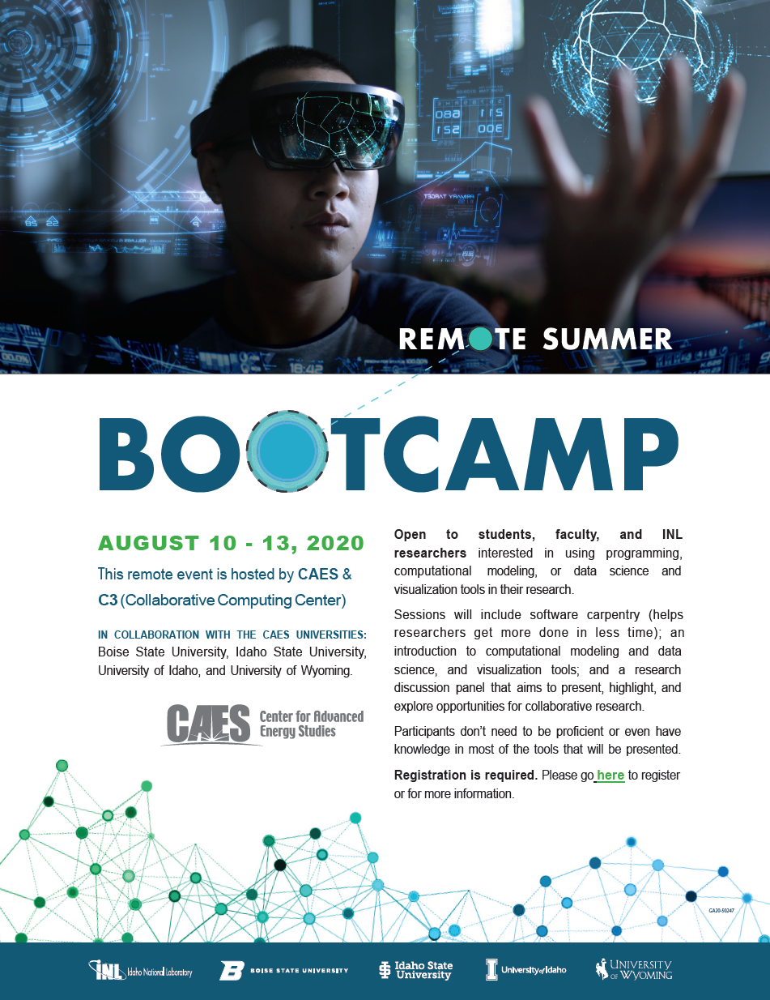

Registration is open for Remote Summer Boot Camp 2: Computing, Data, and Visualization, a weeklong virtual workshop hosted by CAES and C3 (INL’s Collaborative Computing Center) that kicks off August 10. The event features workshops on Software Carpentry and Computational Modeling and Data Science and hands-on sessions, plus opportunities for future collaboration. Anyone interested in using programming, computational modeling, or data science tools in their research is encouraged to register. Prior knowledge of the tools that will be presented is not a prerequisite; the only requirement is a laptop/desktop computer with a Mac, Linux, or Windows operating system (not a tablet, Chromebook, etc.) on which you have administrative privileges, as well as a camera and microphone for interacting with instructors and other participants.
The boot camp is offered in part by the CAES Computing, Data, and Visualization working group, one of seven working groups formed in each of the focus areas outlined in the CAES Strategy.The other working groups are Nuclear Energy, Energy-Water Nexus, Cybersecurity, Advanced Manufacturing, Innovative Energy Systems, and Energy Policy.
Registration Required, register HERE